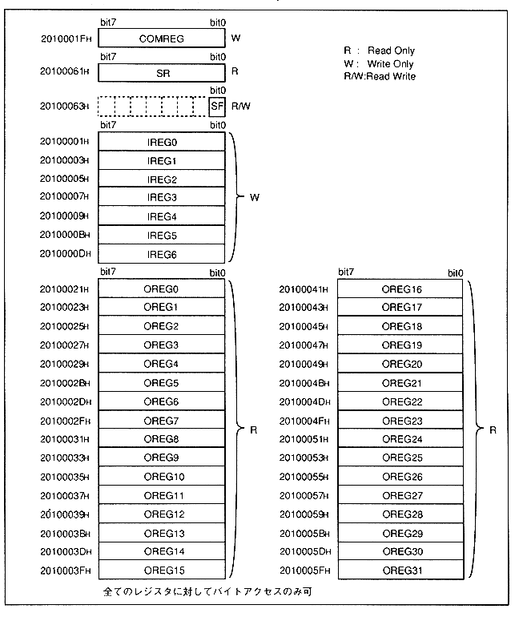

The SH-2 interface register is a register used to output commands, command parameter settings and status display from the SH-2, and result parameters.
Figure 1.3 shows the address map of the SH-2 interface register.
Figure 1.3 SH-2 interface register address map
